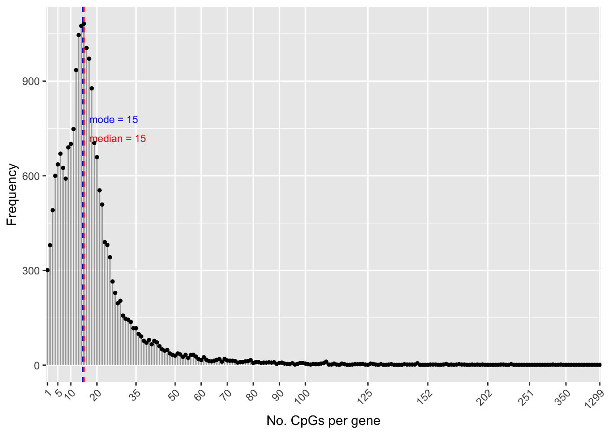
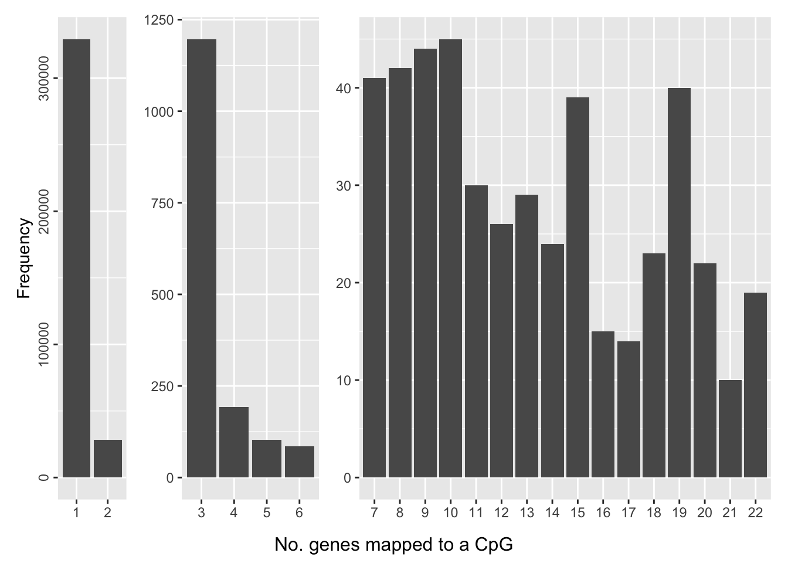
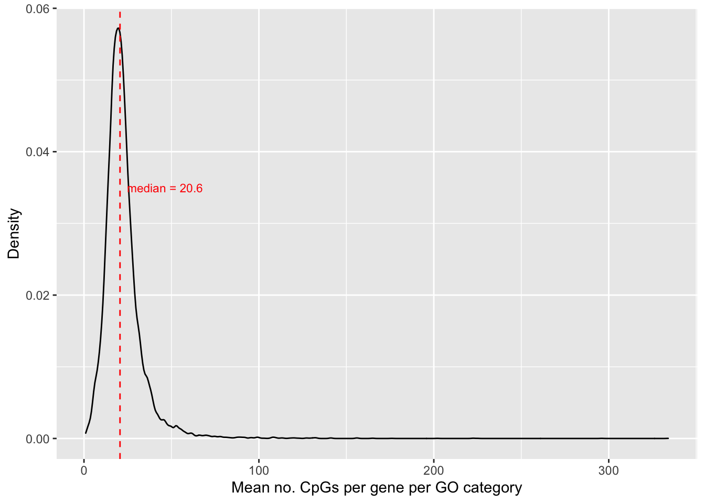
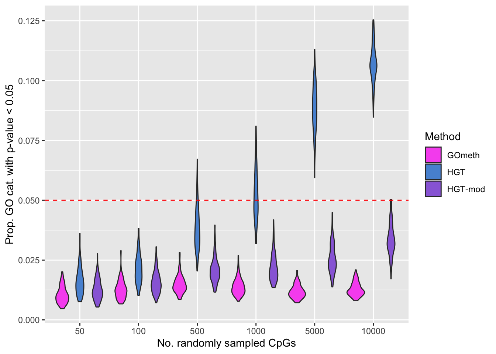
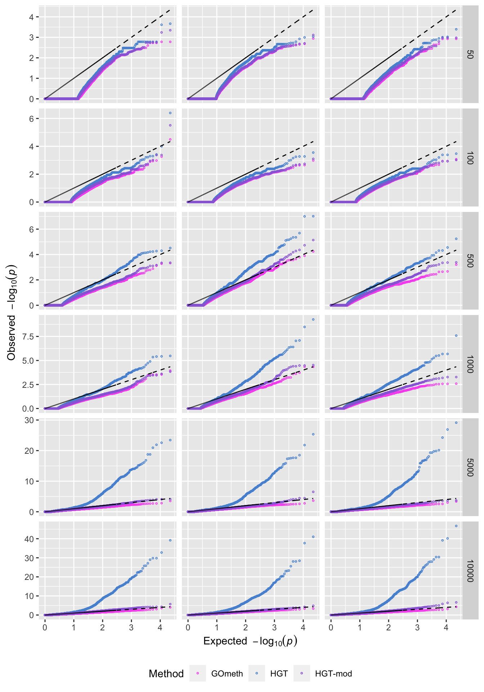
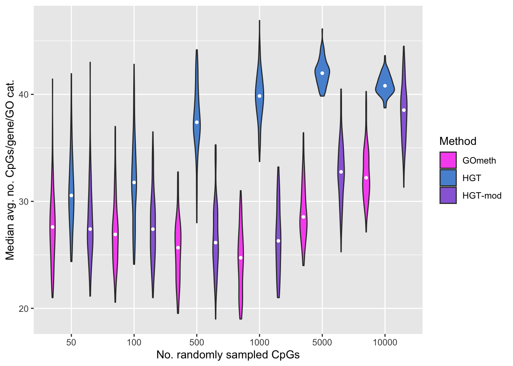

Last updated: 2020-08-14
Checks: 7 0
Knit directory: methyl-geneset-testing/
This reproducible R Markdown analysis was created with workflowr (version 1.6.2). The Checks tab describes the reproducibility checks that were applied when the results were created. The Past versions tab lists the development history.
Great! Since the R Markdown file has been committed to the Git repository, you know the exact version of the code that produced these results.
Great job! The global environment was empty. Objects defined in the global environment can affect the analysis in your R Markdown file in unknown ways. For reproduciblity it's best to always run the code in an empty environment.
The command set.seed(20200302) was run prior to running the code in the R Markdown file. Setting a seed ensures that any results that rely on randomness, e.g. subsampling or permutations, are reproducible.
Great job! Recording the operating system, R version, and package versions is critical for reproducibility.
Nice! There were no cached chunks for this analysis, so you can be confident that you successfully produced the results during this run.
Great job! Using relative paths to the files within your workflowr project makes it easier to run your code on other machines.
Great! You are using Git for version control. Tracking code development and connecting the code version to the results is critical for reproducibility.
The results in this page were generated with repository version ad9e7be. See the Past versions tab to see a history of the changes made to the R Markdown and HTML files.
Note that you need to be careful to ensure that all relevant files for the analysis have been committed to Git prior to generating the results (you can use wflow_publish or wflow_git_commit). workflowr only checks the R Markdown file, but you know if there are other scripts or data files that it depends on. Below is the status of the Git repository when the results were generated:
Ignored files:
Ignored: .DS_Store
Ignored: .Rhistory
Ignored: .Rproj.user/
Ignored: analysis/figures.nb.html
Ignored: code/.job/
Ignored: code/old/
Ignored: data/.DS_Store
Ignored: data/annotations/
Ignored: data/cache-intermediates/
Ignored: data/cache-region/
Ignored: data/cache-rnaseq/
Ignored: data/cache-runtime/
Ignored: data/datasets/GSE110554-data.RData
Ignored: data/datasets/SRP125125/SRR6298258/
Ignored: data/datasets/SRP125125/SRR6298271/
Ignored: data/datasets/SRP125125/SRR6298273/
Ignored: data/datasets/SRP125125/SRR6298278/
Ignored: data/datasets/SRP125125/SRR6298281/
Ignored: data/datasets/SRP125125/SRR6298284/
Ignored: data/datasets/SRP125125/SRR6298286/
Ignored: data/datasets/SRP125125/SRR6298299/
Ignored: data/datasets/SRP125125/SRR6298302/
Ignored: data/datasets/SRP125125/SRR6298307/
Ignored: data/datasets/SRP125125/SRR6298310/
Ignored: data/datasets/SRP125125/SRR6298313/
Ignored: data/datasets/SRP125125/SRR6298315/
Ignored: data/datasets/SRP125125/SRR6298328/
Ignored: data/datasets/SRP125125/SRR6298331/
Ignored: data/datasets/SRP125125/SRR6298336/
Ignored: data/datasets/SRP125125/SRR6298339/
Ignored: data/datasets/SRP125125/SRR6298342/
Ignored: data/datasets/SRP125125/SRR6298344/
Ignored: data/datasets/SRP125125/SRR6298365/
Ignored: data/datasets/SRP125125/SRR6298370/
Ignored: data/datasets/SRP125125/SRR6298373/
Ignored: data/datasets/SRP125125/SRR6298376/
Ignored: data/datasets/SRP125125/SRR_Acc_List.txt
Ignored: data/datasets/SRP125125/SRR_Acc_List_Full.txt
Ignored: data/datasets/SRP125125/SraRunTable.txt
Ignored: data/datasets/SRP125125/multiqc_data/
Ignored: data/datasets/SRP125125/multiqc_report.html
Ignored: data/datasets/SRP125125/quants/
Ignored: data/datasets/TCGA.KIRC.rds
Ignored: data/genesets/BROAD-sets.rds
Ignored: data/misc/
Ignored: output/.DS_Store
Ignored: output/FDR-analysis/
Ignored: output/cache-intermediates/
Ignored: output/cache-region/
Ignored: output/cache-rnaseq/
Ignored: output/cache-runtime/
Ignored: output/compare-methods/
Ignored: output/figures/
Ignored: output/methylgsa-params/
Ignored: output/random-cpg-sims/
Note that any generated files, e.g. HTML, png, CSS, etc., are not included in this status report because it is ok for generated content to have uncommitted changes.
These are the previous versions of the repository in which changes were made to the R Markdown (analysis/02_exploreArrayBias450.Rmd) and HTML (docs/02_exploreArrayBias450.html) files. If you've configured a remote Git repository (see ?wflow_git_remote), click on the hyperlinks in the table below to view the files as they were in that past version.
| File | Version | Author | Date | Message |
|---|---|---|---|---|
| Rmd | 39bdd22 | JovMaksimovic | 2020-08-14 | Renamed analysis files with numbering for run order. |
library(here)
library(glue)
library(minfi)
library(IlluminaHumanMethylationEPICanno.ilm10b4.hg19)
library(IlluminaHumanMethylation450kanno.ilmn12.hg19)
library(missMethyl)
library(org.Hs.eg.db)
library(GO.db)
library(patchwork)
library(grid)
library(ggplot2)
library(tibble)
library(dplyr)
source(here("code/utility.R"))Get the array annotation data.
ann <- loadAnnotation(arrayType="450k")Associate CpGs to genes (ENTREZ ID) using the Illumina annotation information.
flatAnn <- loadFlatAnnotation(ann)The number of CpGs annotated to a gene is highly variable.
numCpgsPerGene <- as.vector(table(flatAnn$entrezid))
summary(numCpgsPerGene) Min. 1st Qu. Median Mean 3rd Qu. Max.
1.00 10.00 15.00 19.38 22.00 1299.00 dat <- data.frame(table(table(flatAnn$entrezid)))
numCpgsPerGene <- as.vector(table(flatAnn$entrezid))
med <- median(numCpgsPerGene)
mod <- getMode(numCpgsPerGene)
p <- ggplot(dat, aes(x=Var1, y=Freq)) +
geom_segment(aes(x=Var1, xend=Var1, y=0, yend=Freq), color="darkgrey") +
geom_point( color="black", size=1) +
geom_vline(xintercept = med, linetype = "dashed", color = "red") +
annotate("text", x = med + 2, label=glue("median = {med}"), y=720,
colour="red", size = 3, hjust="left") +
geom_vline(xintercept = mod - 0.5, linetype = "dashed", color = "blue") +
annotate("text", x = mod + 2, label=glue("mode = {mod}"), y=780,
colour="blue", size = 3, hjust="left") +
scale_x_discrete(breaks = c(1,5,10,20,35,50,60,70,80,90,100,125,152,202,
251,350,1299)) +
theme(axis.text.x=element_text(angle=45, hjust=1)) +
xlab("No. CpGs per gene") +
ylab("Frequency")
p
Save figure for use in manuscript.
outDir <- here::here("output/figures")
if (!dir.exists(outDir)) dir.create(outDir)
fig <- here("output/figures/SFig-1A.rds")
saveRDS(p, fig, compress = FALSE)The number of genes a CpG maps to can also vary, although the majority of CpGs only map to one gene.
dat <- data.frame(table(table(flatAnn$cpg)))
dat$Split <- ifelse(dat$Freq > 2000, "A",
ifelse(dat$Freq < 2000 & dat$Freq > 50,"B","C"))
a <- ggplot(dat[dat$Split == "A",], aes(x=Var1, y=Freq)) +
geom_bar(stat = "identity") +
theme(axis.title.x = element_blank(),
axis.text.y=element_text(angle=90, hjust=0.5)) +
ylab("Frequency")
b <- ggplot(dat[dat$Split == "B",], aes(x=Var1, y=Freq)) +
geom_bar(stat = "identity") +
theme(axis.title.x = element_blank(),
axis.title.y = element_blank())
c <- ggplot(dat[dat$Split == "C",], aes(x=Var1, y=Freq)) +
geom_bar(stat = "identity") +
theme(axis.title.x=element_blank(),
axis.title.y = element_blank())
p <- a + b + c + plot_layout(widths = c(1,2,6)) +
plot_annotation(caption = "No. genes mapped to a CpG",
theme = theme(plot.caption = element_text(hjust = 0.5,
size = 12)))
p
Save figure for use in manuscript.
fig <- here("output/figures/SFig-1B.rds")
saveRDS(p, fig, compress = FALSE)Explore the distribution of the average number of CpGs per gene, per GO category. First, associate GO categories with the CpG and gene data.
cpgEgGo <- cpgsEgGoFreqs(flatAnn)
head(cpgEgGo) ENTREZID GO ENTREZID. Freq
1 142 GO:0000002 142 18
2 291 GO:0000002 291 11
3 1763 GO:0000002 1763 16
4 1890 GO:0000002 1890 25
5 3980 GO:0000002 3980 17
6 4205 GO:0000002 4205 20Calculate the average number of CpGs per gene, per GO category and plot the density distribution.
cpgEgGo %>%
group_by(GO) %>%
summarise(avg = mean(Freq)) -> dat`summarise()` ungrouping output (override with `.groups` argument)med <- round(median(dat$avg), 2)
p <- ggplot(dat, aes(x=avg)) +
geom_density() +
geom_vline(xintercept = med, linetype="dashed", colour = "red") +
labs(x="Mean no. CpGs per gene per GO category", y = "Density") +
annotate("text", x = med + 4, label=glue("median = {med}"),
y = 0.035, colour="red", size = 3, hjust="left")
p
We randomly select 50, 100, 500, 1000, 5000 and 10000 sets of CpGs and perform GO testing on each set 100 times, with and without adjusting for the various biases on the array.
The code used to produce the simulation results can be found in the code/random-cpg-sims directory. It consists of three scripts: genRandCpgSimJobs.R, randomCpgSim.R and processRandCpgSim.R. The genRandCpgSimJobs.R script creates and submits Slurm job scripts that run the randomCpgSim.R script, in parallel, on a HPC. Each job executes one of the 100 simulations, for a fixed number of randomly selected CpGs, using either the 450K or EPIC array annotation. The results of each job are saved as an RDS file named {arrayType}.{noCpgs}.{simNo}.rds in the output/random-cpg-sims directory. Once all simulation jobs are complete, the processRandCpgSim.R must be executed to collate the results into a single object for each array type, which are then saved as 450K.rds and EPIC.rds in the output/random-cpg-sims directory. The intermediate RDS files are moved into output/random-cpg-sims/.bin, which can then be deleted, if no longer required. The subsequent section requires 450K.rds to be present in the output/random-cpg-sims directory for downstream analysis and plotting.
The following boxplots show what proportion of the 100 simulations, at each level of CpGs sampled, had a raw p-value less than 0.05. This gives us an idea of the false discovery rate with and without adjustment for the number of CpGs annotated to a gene.
dat <- readRDS(here("output/random-cpg-sims/450K.rds"))
dat %>% filter(method %in% names(dict)) %>%
mutate(method = unname(dict[method])) %>%
group_by(simNo, noCpgs, method) %>%
summarise(pSig = sum(P.DE < 0.05)/length(P.DE)) -> sigDat`summarise()` regrouping output by 'simNo', 'noCpgs' (override with `.groups` argument)p <- ggplot(sigDat, aes(x=noCpgs, y=pSig, fill=method)) +
geom_violin() +
geom_hline(yintercept=0.05, linetype="dashed", color = "red") +
labs(y="Prop. GO cat. with p-value < 0.05", x="No. randomly sampled CpGs",
fill="Method") +
scale_fill_manual(values = methodCols)
p
Save figure for use in manuscript.
fig <- here("output/figures/SFig-3A.rds")
saveRDS(p, fig, compress = FALSE)QQ plots of randomly selected simulations at each level of CpGs sampled.
set.seed(42)
s <- sample(1:100, 3)
dat %>% filter(simNo %in% s) %>%
filter(method %in% names(dict)) %>%
mutate(method = unname(dict[method])) %>%
arrange(simNo, noCpgs, method, P.DE) %>%
group_by(simNo, noCpgs, method) %>%
mutate(exp = 1:n()/n()) -> subDat
p <- ggplot(subDat, aes(x=-log10(exp), y=-log10(P.DE), color=method)) +
geom_point(shape = 1, size = 0.5) +
facet_grid(noCpgs ~ simNo, scales = "free_y") +
scale_color_manual(values = methodCols)
p + geom_line(aes(x=-log10(exp), y=-log10(exp)),
linetype="dashed", color = "black") +
labs(y=expression(Observed~~-log[10](italic(p))),
x=expression(Expected~~-log[10](italic(p))),
color="Method") +
theme(legend.position="bottom", strip.text.x = element_blank())
Explore the relationship between the median, average number of CpGs, per gene, per GO category and the various sources of bias on the array.
goFreq <- as_tibble(unique(cpgEgGo[,c("GO","Freq")]))
dat %>% filter(method %in% names(dict)) %>%
mutate(method = unname(dict[method])) %>%
filter(P.DE < 0.05) %>%
inner_join(goFreq, by=c("GO" = "GO")) %>%
group_by(simNo, noCpgs, method, GO) %>%
summarise(avgFreq=mean(Freq)) %>%
group_by(simNo, noCpgs, method) %>%
summarise(medAvgFreq=median(avgFreq)) -> medAvgDat`summarise()` regrouping output by 'simNo', 'noCpgs', 'method' (override with `.groups` argument)`summarise()` regrouping output by 'simNo', 'noCpgs' (override with `.groups` argument)p <- ggplot(medAvgDat, aes(x=noCpgs, y=medAvgFreq, fill=method)) +
geom_violin() +
stat_summary(geom="point", size=1, color="white", position = position_dodge(0.9),
show.legend = FALSE, fun = median) +
labs(y="Median avg. no. CpGs/gene/GO cat.",
x="No. randomly sampled CpGs",
fill="Method") +
scale_fill_manual(values = methodCols)
p
Save figure for use in manuscript.
fig <- here("output/figures/SFig-3B.rds")
saveRDS(p, fig, compress = FALSE)
sessionInfo()R version 3.6.3 (2020-02-29)
Platform: x86_64-apple-darwin15.6.0 (64-bit)
Running under: macOS Mojave 10.14.6
Matrix products: default
BLAS: /Library/Frameworks/R.framework/Versions/3.6/Resources/lib/libRblas.0.dylib
LAPACK: /Library/Frameworks/R.framework/Versions/3.6/Resources/lib/libRlapack.dylib
locale:
[1] en_AU.UTF-8/en_AU.UTF-8/en_AU.UTF-8/C/en_AU.UTF-8/en_AU.UTF-8
attached base packages:
[1] grid stats4 parallel stats graphics grDevices utils
[8] datasets methods base
other attached packages:
[1] dplyr_1.0.0
[2] tibble_3.0.3
[3] ggplot2_3.3.2
[4] patchwork_1.0.1
[5] GO.db_3.10.0
[6] org.Hs.eg.db_3.10.0
[7] AnnotationDbi_1.48.0
[8] missMethyl_1.20.4
[9] IlluminaHumanMethylation450kanno.ilmn12.hg19_0.6.0
[10] IlluminaHumanMethylationEPICanno.ilm10b4.hg19_0.6.0
[11] minfi_1.32.0
[12] bumphunter_1.28.0
[13] locfit_1.5-9.4
[14] iterators_1.0.12
[15] foreach_1.5.0
[16] Biostrings_2.54.0
[17] XVector_0.26.0
[18] SummarizedExperiment_1.16.1
[19] DelayedArray_0.12.3
[20] BiocParallel_1.20.1
[21] matrixStats_0.56.0
[22] Biobase_2.46.0
[23] GenomicRanges_1.38.0
[24] GenomeInfoDb_1.22.1
[25] IRanges_2.20.2
[26] S4Vectors_0.24.4
[27] BiocGenerics_0.32.0
[28] glue_1.4.1
[29] here_0.1
[30] workflowr_1.6.2
loaded via a namespace (and not attached):
[1] backports_1.1.8
[2] BiocFileCache_1.10.2
[3] plyr_1.8.6
[4] splines_3.6.3
[5] digest_0.6.25
[6] htmltools_0.5.0
[7] magrittr_1.5
[8] memoise_1.1.0
[9] limma_3.42.2
[10] readr_1.3.1
[11] annotate_1.64.0
[12] askpass_1.1
[13] siggenes_1.60.0
[14] prettyunits_1.1.1
[15] colorspace_1.4-1
[16] blob_1.2.1
[17] rappdirs_0.3.1
[18] BiasedUrn_1.07
[19] xfun_0.15
[20] crayon_1.3.4
[21] RCurl_1.98-1.2
[22] genefilter_1.68.0
[23] GEOquery_2.54.1
[24] IlluminaHumanMethylationEPICmanifest_0.3.0
[25] survival_3.2-3
[26] ruv_0.9.7.1
[27] gtable_0.3.0
[28] zlibbioc_1.32.0
[29] Rhdf5lib_1.8.0
[30] HDF5Array_1.14.4
[31] scales_1.1.1
[32] DBI_1.1.0
[33] rngtools_1.5
[34] Rcpp_1.0.5
[35] xtable_1.8-4
[36] progress_1.2.2
[37] bit_1.1-15.2
[38] mclust_5.4.6
[39] preprocessCore_1.48.0
[40] httr_1.4.2
[41] RColorBrewer_1.1-2
[42] ellipsis_0.3.1
[43] farver_2.0.3
[44] pkgconfig_2.0.3
[45] reshape_0.8.8
[46] XML_3.99-0.3
[47] dbplyr_1.4.4
[48] reshape2_1.4.4
[49] labeling_0.3
[50] tidyselect_1.1.0
[51] rlang_0.4.7
[52] later_1.1.0.1
[53] munsell_0.5.0
[54] tools_3.6.3
[55] generics_0.0.2
[56] RSQLite_2.2.0
[57] evaluate_0.14
[58] stringr_1.4.0
[59] yaml_2.2.1
[60] knitr_1.29
[61] bit64_0.9-7.1
[62] fs_1.4.2
[63] beanplot_1.2
[64] scrime_1.3.5
[65] methylumi_2.32.0
[66] purrr_0.3.4
[67] nlme_3.1-148
[68] doRNG_1.8.2
[69] whisker_0.4
[70] nor1mix_1.3-0
[71] xml2_1.3.2
[72] biomaRt_2.42.1
[73] compiler_3.6.3
[74] rstudioapi_0.11
[75] curl_4.3
[76] statmod_1.4.34
[77] stringi_1.4.6
[78] GenomicFeatures_1.38.2
[79] lattice_0.20-41
[80] Matrix_1.2-18
[81] IlluminaHumanMethylation450kmanifest_0.4.0
[82] multtest_2.42.0
[83] vctrs_0.3.2
[84] pillar_1.4.6
[85] lifecycle_0.2.0
[86] data.table_1.12.8
[87] bitops_1.0-6
[88] httpuv_1.5.4
[89] rtracklayer_1.46.0
[90] R6_2.4.1
[91] promises_1.1.1
[92] gridExtra_2.3
[93] codetools_0.2-16
[94] MASS_7.3-51.6
[95] assertthat_0.2.1
[96] rhdf5_2.30.1
[97] openssl_1.4.2
[98] rprojroot_1.3-2
[99] withr_2.2.0
[100] GenomicAlignments_1.22.1
[101] Rsamtools_2.2.3
[102] GenomeInfoDbData_1.2.2
[103] hms_0.5.3
[104] quadprog_1.5-8
[105] tidyr_1.1.0
[106] base64_2.0
[107] rmarkdown_2.3
[108] DelayedMatrixStats_1.8.0
[109] illuminaio_0.28.0
[110] git2r_0.27.1